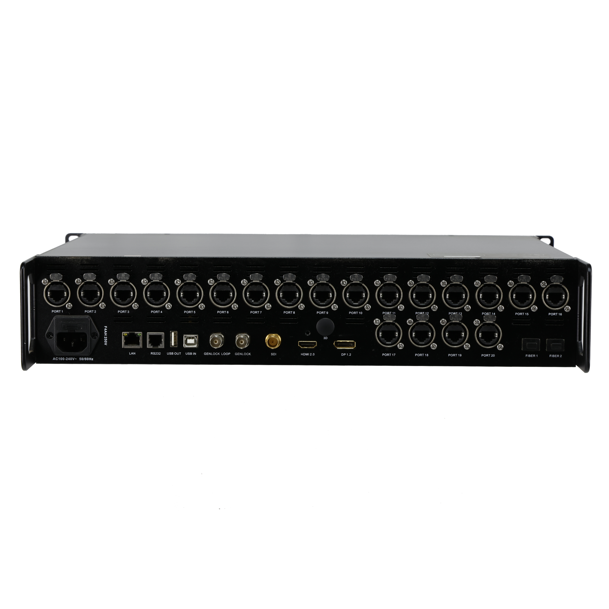

何を映す？
入力端子だけでなく、送り元の解像度・フレームレートと画面の画素数をそろえて相談します。
映像をつなぐ・整える ↗EQUIPMENT / 82
LEDプロセッサー
入力映像を、LED画面の配置に合わせて送り出す。
KEY SPECIFICATIONS
 画像を大きく見る ＋
画像を大きく見る ＋画像出典：製品取扱元の写真掲載ページ
01 / ROLE & FLOW
役割を表す説明図です。実際の配線・端子構成は案件に合わせて決めます。

画像を拡大 ↗型番、端子の役割、必要なケーブルを、送り元と受け側の両方で合わせます。写真だけで互換性や付属品を判断せず、実際の構成で確認します。
02 / BEFORE YOUR BRIEF
入力端子だけでなく、送り元の解像度・フレームレートと画面の画素数をそろえて相談します。
銅線出力と光出力は切り替えて使います。端子数を足し合わせて独立した40出力としては扱いません。
Genlockの基準とLED側の対応を合わせ、本番用カメラで縞やちらつきを試験します。
03 / CHOOSING THE RIGHT TOOL
発表会やステージで、PC・動画・カメラの映像をLED画面へ送る構成に。複数の素材を画面内に配置したい場合も、必要な入力と画面構成から検討します。
Z5の光出力1は銅線ポート1〜10、光出力2は11〜20に対応します。光変換器や受信カードは、型番・ファームウェア・配線を含む組み合わせの確認が必要です。H10FNの構成例をH10FN2へそのまま置き換えられるという意味ではありません。
入力形式、画面の画素配置、出力経路、受信側の構成を一組として確認します。複数台や予備系統を使う場合は、通常時と切替時の映像経路を事前に試験します。掲載写真は外観の確認用で、レンタル品の個体・付属品・設定状態を保証するものではありません。
参考資料：Colorlight Z5 取扱説明書 V1.0 ↗（2026年11月5日照合）
日程・台数、入力素材と映像形式、LED型式と画面画素数、光または銅線の経路、配線距離、受信機器、Genlock・予備系統の要否、設営・本番操作の担当範囲をお聞かせください。本体・周辺機材・搬入出・設営・本番操作・撤去を分けて、必要な範囲を整理します。セットの付属品や人員が自動で含まれる表示ではありません。
04 / RELATED EQUIPMENT
接続対応を保証する組み合わせ一覧ではありません。実機の型番と構成を照合して手配します。